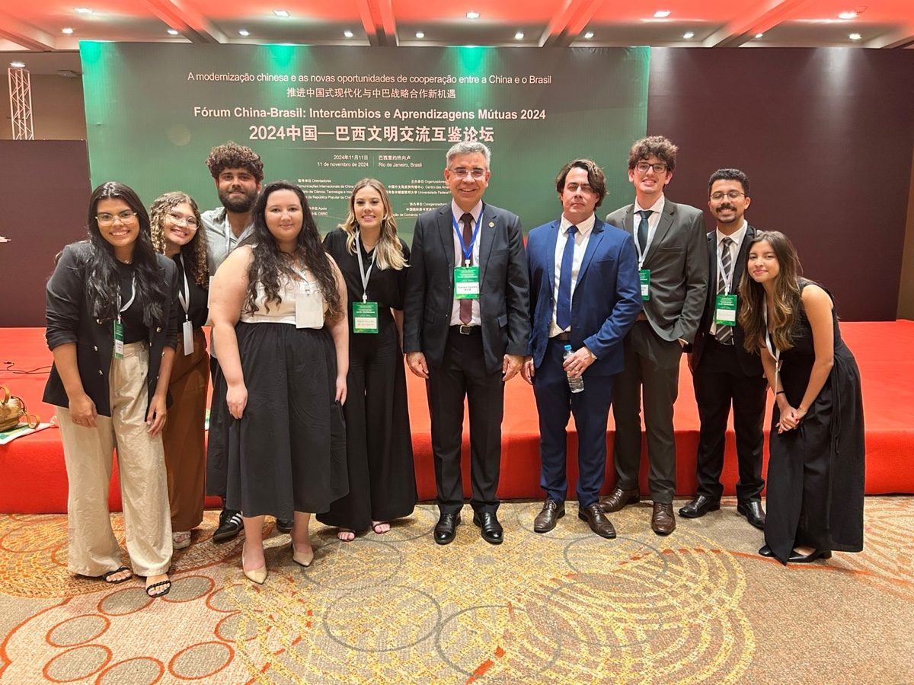
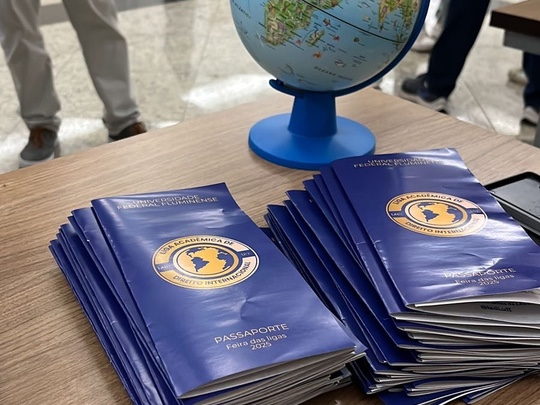
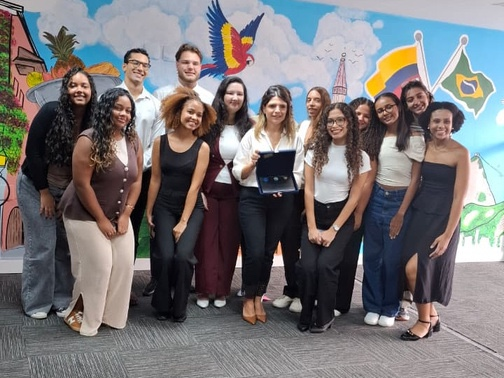

Eventos realizados
-
Novembro de 2024

FórumFórum China-Brasil
A LADI teve a oportunidade de celebrar os 50 anos de relações bilaterais entre Brasil e China no Fórum China-Brasil. Foi uma tarde repleta de discussões importantes e inúmeros aprendizados.
-
Agosto de 2025
ExtensãoProjeto Refugiados nas Escolas
Em parceria com o programa Pares Cáritas, a Faculdade de Direito recebeu uma palestra da empreendedora e refugiada Rama e uma feira cultural com artesanato e culinária típica dos países de origem dos participantes.
-
Setembro de 2025
 Curso
CursoCurso de Oratória
Integrantes da LADI participaram de um curso com a fonoaudióloga Jane Celeste Guberfain, professora da UNIRIO, trabalhando voz, dicção e argumentação para simulações e competições de arbitragem.
-
Setembro de 2025

ExtensãoFeira das Ligas
Na Semana Jurídica, a LADI montou seu estande na feira organizada pelo CAEV e apresentou aos estudantes seus projetos, grupos de estudo e processos seletivos.
-
Novembro de 2025
 Simulação
SimulaçãoSimulação da ONU: A Questão Palestina
Em conjunto com a Liga de Direito Internacional da UNIRIO, a LADI organizou uma simulação da Assembleia Geral da ONU que reuniu estudantes de diversas instituições.
-
2026

VisitasVisitas aos consulados
Membros da LADI visitaram o Consulado da Colômbia e o Consulado do Reino dos Países Baixos para conhecer de perto a prática diplomática e consular.
-
1º e 2º semestres de 2026
SimulaçãoMiniMUN 2026
A MiniMUN é um projeto inédito na Faculdade de Direito da UFF que busca aproximar os estudantes ingressantes dos debates do Direito Internacional. Em 2026, foram realizadas duas edições: uma no primeiro e outra no segundo semestre.
Simulações da ONU
Nas simulações, os participantes representam países e organismos internacionais e debatem temas reais da agenda global, praticando pesquisa, negociação, argumentação e oratória.
Todo ano a LADI organiza a MiniMUN, voltada aos calouros da Faculdade de Direito, e a tradicional Simulação de final de ano, realizada em parceria com a Liga de Direito Internacional da UNIRIO.
Como participar
- Inscrição: quando as inscrições abrirem, preencha o formulário.
- Preparação: treinamentos e estudos dirigidos com a Diretoria de Simulações.
- Simulação: o dia do debate, com todas as delegações reunidas.
As inscrições ainda não foram abertas. Acompanhe as novidades no Instagram @ladi.uff.